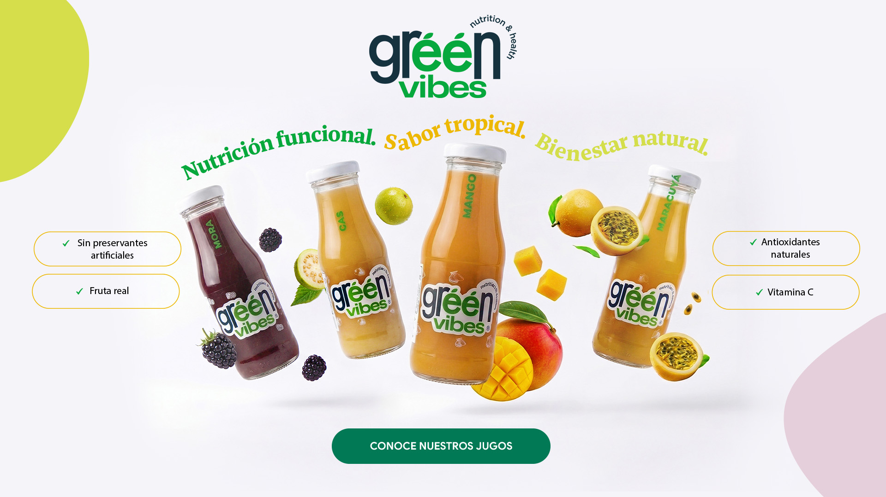
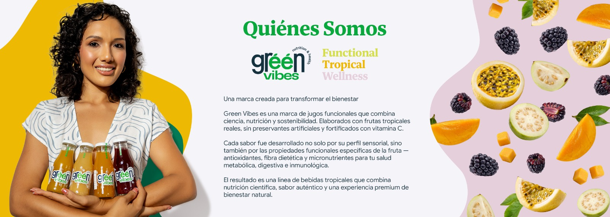
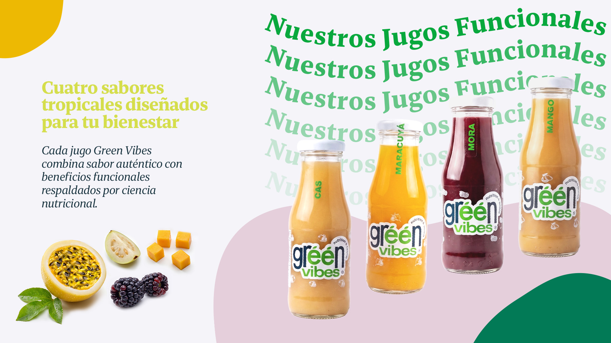
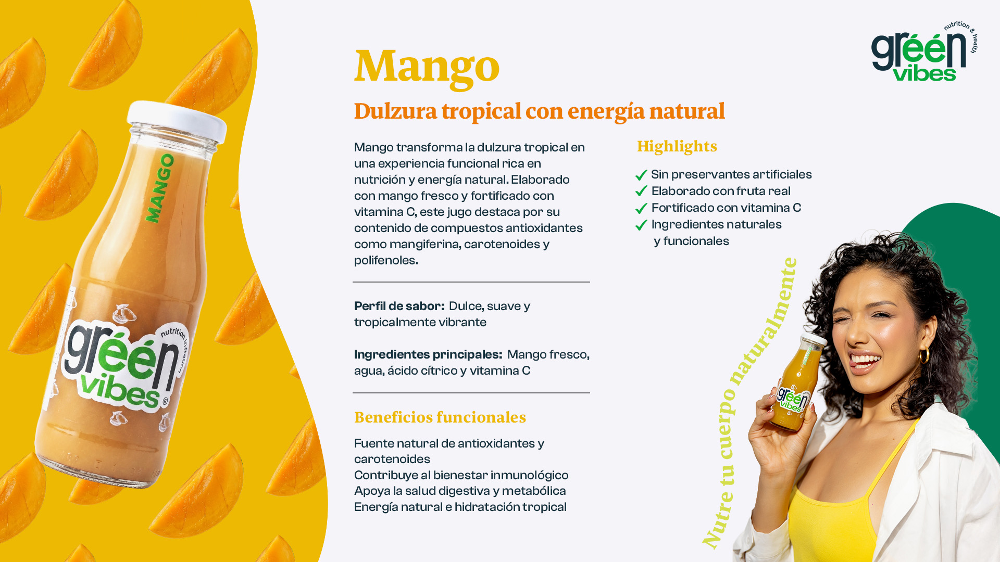
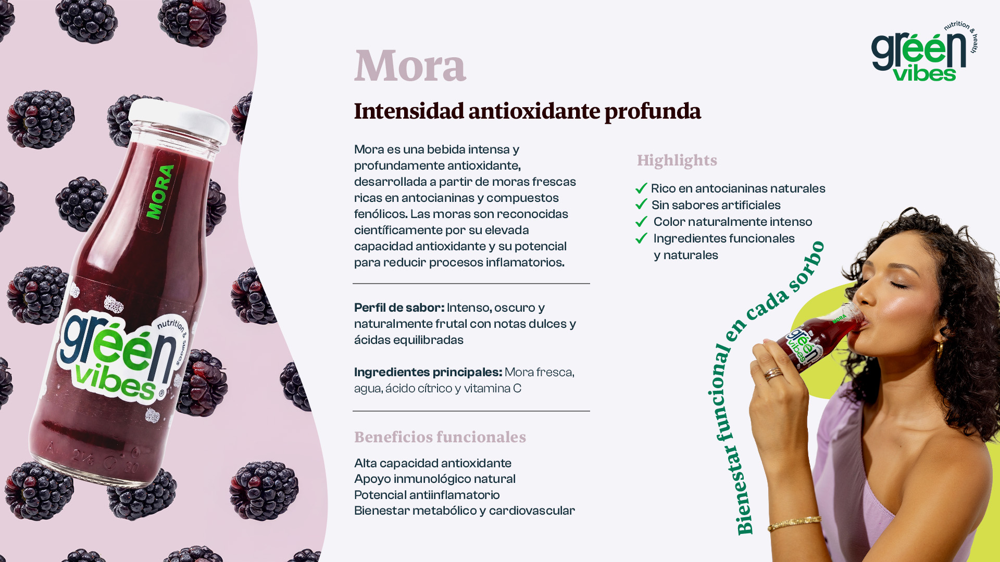
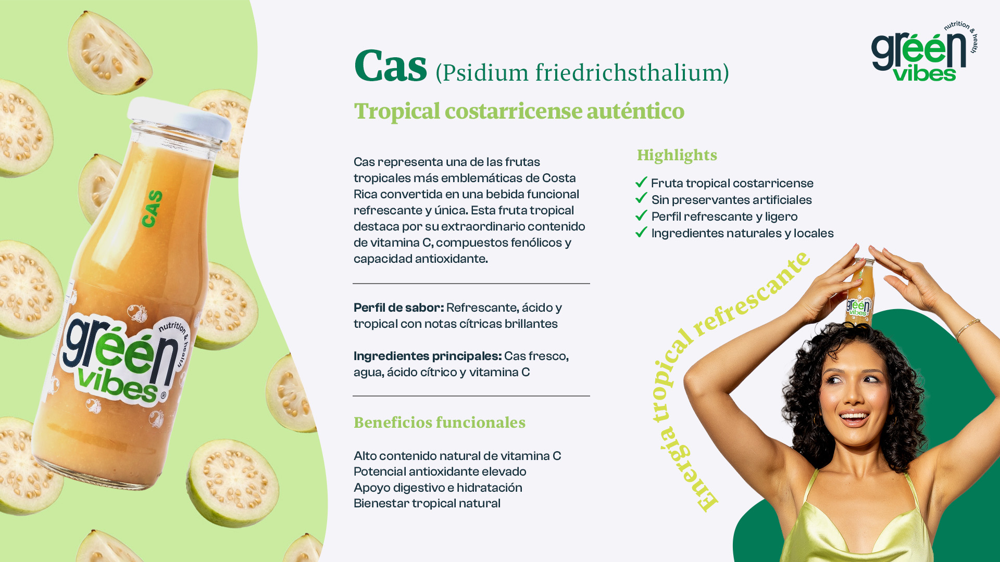
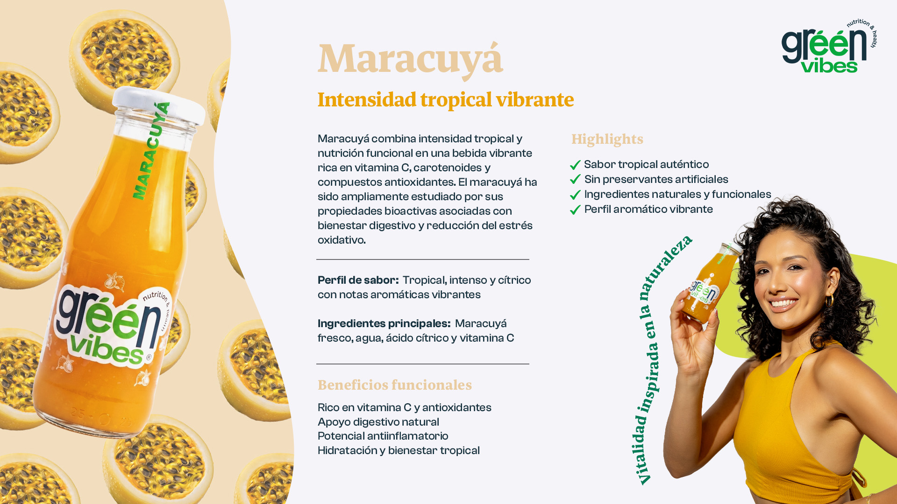
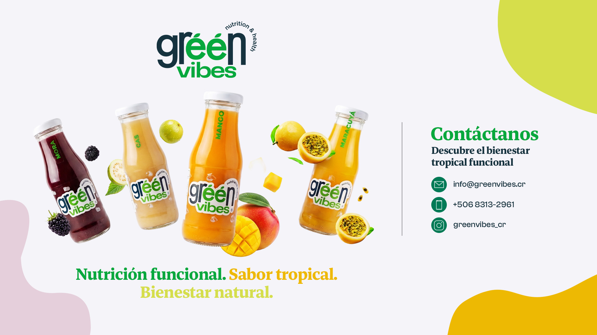

Una marca creada para transformar el bienestar
Green Vibes es una marca de jugos funcionales que combina ciencia, nutrición y sostenibilidad. Elaborados con frutas tropicales reales, sin preservantes artificiales y fortificados con vitamina C.
Cada sabor fue desarrollado no solo por su perfil sensorial, sino también por las propiedades funcionales específicas de la fruta — antioxidantes, fibra dietética y micronutrientes para tu salud metabólica, digestiva e inmunológica.
El resultado es una línea de bebidas tropicales que combina nutrición científica, sabor auténtico y una experiencia premium de bienestar natural.

Cada jugo Green Vibes combina sabor auténtico con beneficios funcionales respaldados por ciencia nutricional.

Dulzura tropical con energía natural
Mango fresco fortificado con vitamina C. Rico en mangiferina, carotenoides y polifenoles. Perfil de sabor dulce, suave y tropicalmente vibrante.

Intensidad antioxidante profunda
Moras frescas ricas en antocianinas y compuestos fenólicos. Intenso, oscuro y naturalmente frutal con notas dulces y ácidas equilibradas.

Tropical costarricense auténtico
Psidium friedrichsthalium — una de las frutas más emblemáticas de Costa Rica. Alto en vitamina C, compuestos fenólicos y capacidad antioxidante. Refrescante y ligero.

Intensidad tropical vibrante
Vitamina C, carotenoides y compuestos antioxidantes en una bebida tropical aromática e intensa. Asociado con bienestar digestivo y reducción del estrés oxidativo.
Formulaciones limpias y funcionales. Solo lo que la naturaleza ofrece.
Frutas tropicales auténticas seleccionadas por su perfil nutricional y sensorial.
Cada botella refuerza tu sistema inmunológico de forma natural.
Ingredientes funcionales con beneficios respaldados por investigación científica.

Nutrición funcional. Sabor tropical. Bienestar natural.